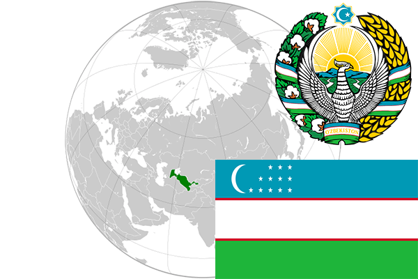

To`liq nomi: Oʻzbekiston Respublikasi
Region: O’rta Osiyo
Qonunchilik shakli: Respublika
Mustaqillik kuni: 1-sentabr 1991-yil
Poytaxt: Toshkent
Maydoni: 448 978 km²
Chegaradosh davlatlari: Qozog’iston, Afg’oniston, Turkmaniston, Tojikiston, Qirg’iziston.
Aholisi: 32,979,000 (2017-yil)
Aholi zichligi: 70.5/km2
Aholining o`rtacha yoshi: 68,46 yil (2015-yil)
Rasmiy tili: O’zbek tili
Dini: Islom
Pul birligi: O’zbekiston so’mi
Telefon prefiksi: +998
Internet domen: .uz
Xalqaro tashkilotlarga a`zoligi: BMT (1992-yil), MDH (1992-yil), SHHT (2001-yil).
Dengiz va okeanlarga chiqishi: Yo’q
YIM: Butun: $68.3mlrd (2017-yil) Jon boshiga: $2,154
Yirik shaharlari: Toshkent, Samarqand, Buxoro, Xiva, Andijon